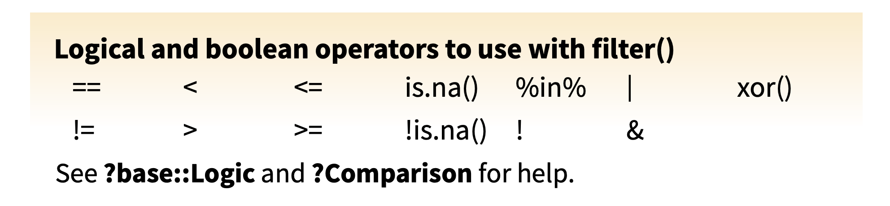
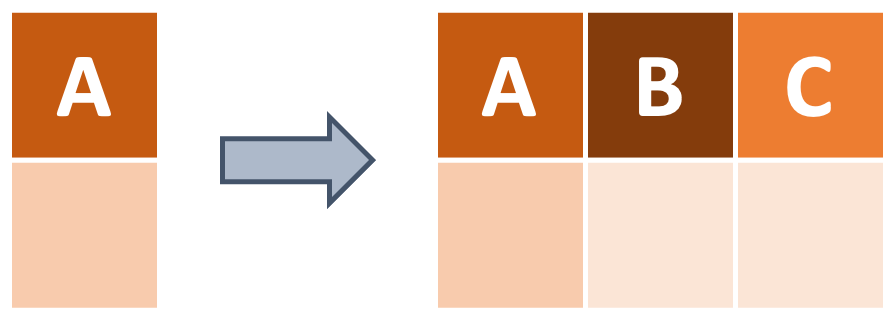

Wrangle
What are Tidy Data?

What are some common things you like to do with your data? Maybe remove rows or columns, do calculations and add new columns? This is called data wrangling. The data we get to work with are rarely, if ever, in the format we need to do our analyses. dplyr and tidyr are two R packages from the tidyverse that provide a fairly complete and extremely powerful set of functions for us to do virtually all needed wrangling quickly. Here we introduce some commonly used functions from these two packages.
Penguins Example Data
The data we’ll be using for this workshop comes from the palmerpenguins package, maintained by Allison Horst. The “penguins” dataset from this package contains size measurements for adult foraging penguins near Palmer Station, Antarctica. Data were collected and made available by Dr. Kristen Gorman and the Palmer Station Long Term Ecological Research (LTER) Program. Let’s take a look at it!
penguins# A tibble: 344 × 8
species island bill_length_mm bill_depth_mm flipper_length_mm body_mass_g
<fct> <fct> <dbl> <dbl> <int> <int>
1 Adelie Torgersen 39.1 18.7 181 3750
2 Adelie Torgersen 39.5 17.4 186 3800
3 Adelie Torgersen 40.3 18 195 3250
4 Adelie Torgersen NA NA NA NA
5 Adelie Torgersen 36.7 19.3 193 3450
6 Adelie Torgersen 39.3 20.6 190 3650
7 Adelie Torgersen 38.9 17.8 181 3625
8 Adelie Torgersen 39.2 19.6 195 4675
9 Adelie Torgersen 34.1 18.1 193 3475
10 Adelie Torgersen 42 20.2 190 4250
# … with 334 more rows, and 2 more variables: sex <fct>, year <int>The “penguins” dataset has 344 rows and 8 columns.
The columns are as follows:
species: a factor denoting penguin species (Adélie, Chinstrap and Gentoo)
island: a factor denoting island in Palmer Archipelago, Antarctica (Biscoe, Dream or Torgersen)
bill_length_mm: a number denoting bill length (millimeters)
bill_depth_mm: a number denoting bill depth (millimeters)
flipper_length_mm: an integer denoting flipper length (millimeters)
body_mass_g: an integer denoting body mass (grams)
sex: a factor denoting penguin sex (female, male)
year: an integer denoting the study year (2007, 2008, or 2009)
This dataset is an example of tidy data, which means that each variable is in its own column and each observation is in its own row. Generally speaking, functions from packages in the tidyverse expect tidy data though they can be used in some cases to help get data into tidy format! Regardless, the penguins dataset is what we’ll use for all examples in this workshop so be sure that you install the palmerpenguins R package.
Selecting columns
To start off, how do we do a fundamental action like selecting the columns we want? dplyr’s select function provides us with a straightforward way to do just that. We only need to provide the column names!

Example: Select
For example, to select only the species, island, and body_mass_g columns, we can use the following code:
# Provide the name of the data and then the columns that you want!
penguins_selected <- dplyr::select(.data = penguins, species, island, body_mass_g)
# Look at the product
knitr::kable(head(penguins_selected))| species | island | body_mass_g |
|---|---|---|
| Adelie | Torgersen | 3750 |
| Adelie | Torgersen | 3800 |
| Adelie | Torgersen | 3250 |
| Adelie | Torgersen | NA |
| Adelie | Torgersen | 3450 |
| Adelie | Torgersen | 3650 |
If we want to remove specific columns, we can use the - operator.
# Put a "-" in front of each column you would like to remove from your dataframe
penguins_selected <- dplyr::select(.data = penguins, -flipper_length_mm, -sex)
# Look at the product
knitr::kable(head(penguins_selected))| species | island | bill_length_mm | bill_depth_mm | body_mass_g | year |
|---|---|---|---|---|---|
| Adelie | Torgersen | 39.1 | 18.7 | 3750 | 2007 |
| Adelie | Torgersen | 39.5 | 17.4 | 3800 | 2007 |
| Adelie | Torgersen | 40.3 | 18.0 | 3250 | 2007 |
| Adelie | Torgersen | NA | NA | NA | 2007 |
| Adelie | Torgersen | 36.7 | 19.3 | 3450 | 2007 |
| Adelie | Torgersen | 39.3 | 20.6 | 3650 | 2007 |
Example: Selecting columns with helper functions
If we want to select the columns that contain length measurements, we can manually type bill_length_mm and flipper_length_mm, but there’s actually an easier way using the contains function, also from the dplyr package. Enter a string that matches what you’re looking for among the column names.
# Enter a matching string inside of a `select` call
penguins_selected <- dplyr::select(.data = penguins, dplyr::contains("length"))
# Look at the product
knitr::kable(head(penguins_selected))| bill_length_mm | flipper_length_mm |
|---|---|
| 39.1 | 181 |
| 39.5 | 186 |
| 40.3 | 195 |
| NA | NA |
| 36.7 | 193 |
| 39.3 | 190 |
In addition to contains, starts_with and ends_with are also two other helper functions–also from the dplyr package–that allow you to select columns that starts with or ends with a certain string! For example, if we wanted all the columns that end in “mm”…
# Enter a string that matches the end of the column names
penguins_selected <- dplyr::select(.data = penguins, dplyr::ends_with("_mm"))
# Look at the product
knitr::kable(head(penguins_selected))| bill_length_mm | bill_depth_mm | flipper_length_mm |
|---|---|---|
| 39.1 | 18.7 | 181 |
| 39.5 | 17.4 | 186 |
| 40.3 | 18.0 | 195 |
| NA | NA | NA |
| 36.7 | 19.3 | 193 |
| 39.3 | 20.6 | 190 |
Now what if we wanted all the columns from the first column species to the sixth column body_mass_g? We can use a colon, :, between the first (leftmost) and last (rightmost) columns in the range that we want to include.
# Use a colon to indicate a range of columns you want to select
penguins_selected <- dplyr::select(.data = penguins, species:body_mass_g)
# Look at the product
knitr::kable(head(penguins_selected))| species | island | bill_length_mm | bill_depth_mm | flipper_length_mm | body_mass_g |
|---|---|---|---|---|---|
| Adelie | Torgersen | 39.1 | 18.7 | 181 | 3750 |
| Adelie | Torgersen | 39.5 | 17.4 | 186 | 3800 |
| Adelie | Torgersen | 40.3 | 18.0 | 195 | 3250 |
| Adelie | Torgersen | NA | NA | NA | NA |
| Adelie | Torgersen | 36.7 | 19.3 | 193 | 3450 |
| Adelie | Torgersen | 39.3 | 20.6 | 190 | 3650 |
These helper functions make it convenient to select multiple columns at once, which is especially useful if you have a big dataframe and don’t want to exhaustively list every column name.
Subsetting rows
Instead of selecting certain columns, how can we get a subset of rows that meet certain conditions? For example, in the diagram below, how can we filter for rows that contain a diamond shape? We can use dplyr’s handy filter function along with logical and boolean operators!

For reference, here are the operators we can use to specify our conditions with filter.

Example: Equality operator
To get familiar with these operators, let’s see some examples. To make a subset of our data that only contains information on Chinstrap penguins, here is what we would do:
# Get all the rows where the species is "Chinstrap"
penguins_filtered <- dplyr::filter(.data = penguins, species == "Chinstrap")
knitr::kable(head(penguins_filtered))| species | island | bill_length_mm | bill_depth_mm | flipper_length_mm | body_mass_g | sex | year |
|---|---|---|---|---|---|---|---|
| Chinstrap | Dream | 46.5 | 17.9 | 192 | 3500 | female | 2007 |
| Chinstrap | Dream | 50.0 | 19.5 | 196 | 3900 | male | 2007 |
| Chinstrap | Dream | 51.3 | 19.2 | 193 | 3650 | male | 2007 |
| Chinstrap | Dream | 45.4 | 18.7 | 188 | 3525 | female | 2007 |
| Chinstrap | Dream | 52.7 | 19.8 | 197 | 3725 | male | 2007 |
| Chinstrap | Dream | 45.2 | 17.8 | 198 | 3950 | female | 2007 |
Note that we need to write our match as a string, encased in quotation marks.
Example: “Or” statement
What if we wanted to get all the rows where the penguin species is “Chinstrap” or “Gentoo”? In other words, we want all the rows where either condition is true. There are two options to do this. The first option is to use the “or” operator, |, between the conditions.
# First option
# Get all the rows where the species is "Chinstrap" or "Gentoo"
penguins_filtered <- dplyr::filter(.data = penguins,
species == "Chinstrap" | species == "Gentoo")
knitr::kable(head(penguins_filtered))| species | island | bill_length_mm | bill_depth_mm | flipper_length_mm | body_mass_g | sex | year |
|---|---|---|---|---|---|---|---|
| Gentoo | Biscoe | 46.1 | 13.2 | 211 | 4500 | female | 2007 |
| Gentoo | Biscoe | 50.0 | 16.3 | 230 | 5700 | male | 2007 |
| Gentoo | Biscoe | 48.7 | 14.1 | 210 | 4450 | female | 2007 |
| Gentoo | Biscoe | 50.0 | 15.2 | 218 | 5700 | male | 2007 |
| Gentoo | Biscoe | 47.6 | 14.5 | 215 | 5400 | male | 2007 |
| Gentoo | Biscoe | 46.5 | 13.5 | 210 | 4550 | female | 2007 |
The second option is to use the %in% operator, followed by a vector of values to look for a match in. If you want to look for multiple matches, this option may be better since you only need to add to your vector of matches.
# Second option
# Get all the rows where the species is "Chinstrap" or "Gentoo"
penguins_filtered <- dplyr::filter(.data = penguins,
species %in% c("Chinstrap", "Gentoo"))
knitr::kable(head(penguins_filtered))| species | island | bill_length_mm | bill_depth_mm | flipper_length_mm | body_mass_g | sex | year |
|---|---|---|---|---|---|---|---|
| Gentoo | Biscoe | 46.1 | 13.2 | 211 | 4500 | female | 2007 |
| Gentoo | Biscoe | 50.0 | 16.3 | 230 | 5700 | male | 2007 |
| Gentoo | Biscoe | 48.7 | 14.1 | 210 | 4450 | female | 2007 |
| Gentoo | Biscoe | 50.0 | 15.2 | 218 | 5700 | male | 2007 |
| Gentoo | Biscoe | 47.6 | 14.5 | 215 | 5400 | male | 2007 |
| Gentoo | Biscoe | 46.5 | 13.5 | 210 | 4550 | female | 2007 |
Example: “And” statement
We can also keep rows where both conditions are met by using the “and” operator, &. To keep only the rows where the species is “Adelie” and the island is “Dream”, here is one option we can do:
# First option
# Get all the rows where the species is "Adelie" and the island is "Dream"
penguins_filtered <- dplyr::filter(.data = penguins,
species == "Adelie" & island == "Dream")
knitr::kable(head(penguins_filtered))| species | island | bill_length_mm | bill_depth_mm | flipper_length_mm | body_mass_g | sex | year |
|---|---|---|---|---|---|---|---|
| Adelie | Dream | 39.5 | 16.7 | 178 | 3250 | female | 2007 |
| Adelie | Dream | 37.2 | 18.1 | 178 | 3900 | male | 2007 |
| Adelie | Dream | 39.5 | 17.8 | 188 | 3300 | female | 2007 |
| Adelie | Dream | 40.9 | 18.9 | 184 | 3900 | male | 2007 |
| Adelie | Dream | 36.4 | 17.0 | 195 | 3325 | female | 2007 |
| Adelie | Dream | 39.2 | 21.1 | 196 | 4150 | male | 2007 |
Or you can also just use a comma instead!
# Second option
# Get all the rows where the species is "Adelie" and the island is "Dream"
penguins_filtered <- dplyr::filter(.data = penguins,
species == "Adelie", island == "Dream")
knitr::kable(head(penguins_filtered))| species | island | bill_length_mm | bill_depth_mm | flipper_length_mm | body_mass_g | sex | year |
|---|---|---|---|---|---|---|---|
| Adelie | Dream | 39.5 | 16.7 | 178 | 3250 | female | 2007 |
| Adelie | Dream | 37.2 | 18.1 | 178 | 3900 | male | 2007 |
| Adelie | Dream | 39.5 | 17.8 | 188 | 3300 | female | 2007 |
| Adelie | Dream | 40.9 | 18.9 | 184 | 3900 | male | 2007 |
| Adelie | Dream | 36.4 | 17.0 | 195 | 3325 | female | 2007 |
| Adelie | Dream | 39.2 | 21.1 | 196 | 4150 | male | 2007 |
Example: Other logical operators
The other standard logical operators (<, >, <=, >=) also work pretty intuitively with our conditions. Note that when we filter for numeric values, we do not need the quotation marks.
# Get all the rows where the bill_length_mm is greater than 50
penguins_filtered <- dplyr::filter(.data = penguins, bill_length_mm > 50)
knitr::kable(head(penguins_filtered))| species | island | bill_length_mm | bill_depth_mm | flipper_length_mm | body_mass_g | sex | year |
|---|---|---|---|---|---|---|---|
| Gentoo | Biscoe | 50.2 | 14.3 | 218 | 5700 | male | 2007 |
| Gentoo | Biscoe | 59.6 | 17.0 | 230 | 6050 | male | 2007 |
| Gentoo | Biscoe | 50.5 | 15.9 | 222 | 5550 | male | 2008 |
| Gentoo | Biscoe | 50.5 | 15.9 | 225 | 5400 | male | 2008 |
| Gentoo | Biscoe | 50.1 | 15.0 | 225 | 5000 | male | 2008 |
| Gentoo | Biscoe | 50.4 | 15.3 | 224 | 5550 | male | 2008 |
Example: Excluding rows
Sometimes it’s faster to subset the rows that do not meet a condition, rather than listing everything that we do want to keep. This is where the != operator becomes useful. It basically means “does not match”. More generally, the exclamation mark indicates negation in the operator.
# Get all the rows where the species is NOT "Chinstrap"
penguins_filtered <- dplyr::filter(.data = penguins, species != "Chinstrap")
knitr::kable(head(penguins_filtered))| species | island | bill_length_mm | bill_depth_mm | flipper_length_mm | body_mass_g | sex | year |
|---|---|---|---|---|---|---|---|
| Adelie | Torgersen | 39.1 | 18.7 | 181 | 3750 | male | 2007 |
| Adelie | Torgersen | 39.5 | 17.4 | 186 | 3800 | female | 2007 |
| Adelie | Torgersen | 40.3 | 18.0 | 195 | 3250 | female | 2007 |
| Adelie | Torgersen | NA | NA | NA | NA | NA | 2007 |
| Adelie | Torgersen | 36.7 | 19.3 | 193 | 3450 | female | 2007 |
| Adelie | Torgersen | 39.3 | 20.6 | 190 | 3650 | male | 2007 |
Challenge: Subsetting
As a practice exercise, try to get all the rows that do not have any NA values in the sex column.
Making and modifying columns
Besides selecting columns and subsetting rows, we may want to create new columns in our data. For instance, in the diagram below, we have a dataframe that only contains column A, and then we add new columns B and C. We can use dplyr’s mutate function to add a new column, while keeping the existing columns.

Example: Mutate
The syntax to add a new column to your dataframe is as follows:
# General mutate syntax
dplyr::mutate(.data = your_data, new_column_name = what_it_contains)If we wanted to add a new column that has the penguin’s body mass in kilograms, we can do some simple arithmetic on the body_mass_g column.
# Create a new column with the penguins' body mass in kilograms
penguins_mutated <- dplyr::mutate(.data = penguins, body_mass_kg = body_mass_g / 1000)
knitr::kable(head(penguins_mutated))| species | island | bill_length_mm | bill_depth_mm | flipper_length_mm | body_mass_g | sex | year | body_mass_kg |
|---|---|---|---|---|---|---|---|---|
| Adelie | Torgersen | 39.1 | 18.7 | 181 | 3750 | male | 2007 | 3.75 |
| Adelie | Torgersen | 39.5 | 17.4 | 186 | 3800 | female | 2007 | 3.80 |
| Adelie | Torgersen | 40.3 | 18.0 | 195 | 3250 | female | 2007 | 3.25 |
| Adelie | Torgersen | NA | NA | NA | NA | NA | 2007 | NA |
| Adelie | Torgersen | 36.7 | 19.3 | 193 | 3450 | female | 2007 | 3.45 |
| Adelie | Torgersen | 39.3 | 20.6 | 190 | 3650 | male | 2007 | 3.65 |
Additionally, mutate can be used to overwrite an existing column. If we give the new column the same name as an existing column, the existing column will be replaced. As you can see, island is currently a factor. To change its class to a character, we would need to overwrite the whole column.
# the `island` column is currently a factor
class(penguins$island)[1] "factor"# Modify the existing island column
penguins_mutated <- dplyr::mutate(.data = penguins, island = as.character(island))
# the `island` column is now a character!
class(penguins_mutated$island)[1] "character"Now island is a character column!
Example: Case When
dplyr’s case_when is a really powerful tool that allows you to add a new column containing values dependent on your condition(s)! It can be thought of as a multi-case if-else statement. The general syntax for leveraging case_when with mutate looks like this:
# General mutate with case_when syntax
dplyr::mutate(.data = your_data, new_column_name = dplyr::case_when(
condition1 ~ value_for_condition1,
condition2 ~ value_for_condition2,
condition3 ~ value_for_condition3,
...
))Suppose we want to add a new column called flipper_rank that contains:
- 1 if
flipper_length_mmis < 200 mm - 2 if
flipper_length_mmis >= 200 mm - 0 is
flipper_length_mmis anything else (e.g.NA)
# Enter your conditions on the left side and the values on the right side of the tilde
penguins_mutated <- dplyr::mutate(.data = penguins, flipper_rank = dplyr::case_when(
flipper_length_mm < 200 ~ 1,
flipper_length_mm >= 200 ~ 2,
TRUE ~ 0 # 0 for anything else
))
knitr::kable(head(penguins_mutated))| species | island | bill_length_mm | bill_depth_mm | flipper_length_mm | body_mass_g | sex | year | flipper_rank |
|---|---|---|---|---|---|---|---|---|
| Adelie | Torgersen | 39.1 | 18.7 | 181 | 3750 | male | 2007 | 1 |
| Adelie | Torgersen | 39.5 | 17.4 | 186 | 3800 | female | 2007 | 1 |
| Adelie | Torgersen | 40.3 | 18.0 | 195 | 3250 | female | 2007 | 1 |
| Adelie | Torgersen | NA | NA | NA | NA | NA | 2007 | 0 |
| Adelie | Torgersen | 36.7 | 19.3 | 193 | 3450 | female | 2007 | 1 |
| Adelie | Torgersen | 39.3 | 20.6 | 190 | 3650 | male | 2007 | 1 |
Challenge: Case When
Try to see if you can add a new column called size_bin that contains:
- “large” if body mass is greater than 4500 grams
- “medium” if body mass is greater than 3000 grams, and less than or equal to 4500 grams
- “small” if body mass is less than or equal to 3000 grams
Splitting and uniting cells
Another common task in data wrangling involves splitting or combining cells into individual values. To demonstrate, let’s first make a new column that contains the full scientific names for these penguins using case_when.
# Enter your conditions on the left side and the values on the right side of the tilde
penguins_v1 <- dplyr::mutate(.data = penguins, scientific_name = dplyr::case_when(
species == "Adelie" ~ "Pygoscelis adeliae",
species == "Chinstrap" ~ "Pygoscelis antarcticus",
species == "Gentoo" ~ "Pygoscelis papua"
))
knitr::kable(head(penguins_v1))| species | island | bill_length_mm | bill_depth_mm | flipper_length_mm | body_mass_g | sex | year | scientific_name |
|---|---|---|---|---|---|---|---|---|
| Adelie | Torgersen | 39.1 | 18.7 | 181 | 3750 | male | 2007 | Pygoscelis adeliae |
| Adelie | Torgersen | 39.5 | 17.4 | 186 | 3800 | female | 2007 | Pygoscelis adeliae |
| Adelie | Torgersen | 40.3 | 18.0 | 195 | 3250 | female | 2007 | Pygoscelis adeliae |
| Adelie | Torgersen | NA | NA | NA | NA | NA | 2007 | Pygoscelis adeliae |
| Adelie | Torgersen | 36.7 | 19.3 | 193 | 3450 | female | 2007 | Pygoscelis adeliae |
| Adelie | Torgersen | 39.3 | 20.6 | 190 | 3650 | male | 2007 | Pygoscelis adeliae |
Example: Separate
Now that we have our new column, suppose we want to split it so that scientific_name becomes two columns instead: genus and epithet. We will need to utilize tidyr’s separate function by providing the type of separator and the new column names!
# Indicate the column you want to split, the separator, and the new column names!
penguins_separated <- tidyr::separate(data = penguins_v1,
col = scientific_name,
sep = " ",
into = c("genus", "epithet"))
knitr::kable(head(penguins_separated))| species | island | bill_length_mm | bill_depth_mm | flipper_length_mm | body_mass_g | sex | year | genus | epithet |
|---|---|---|---|---|---|---|---|---|---|
| Adelie | Torgersen | 39.1 | 18.7 | 181 | 3750 | male | 2007 | Pygoscelis | adeliae |
| Adelie | Torgersen | 39.5 | 17.4 | 186 | 3800 | female | 2007 | Pygoscelis | adeliae |
| Adelie | Torgersen | 40.3 | 18.0 | 195 | 3250 | female | 2007 | Pygoscelis | adeliae |
| Adelie | Torgersen | NA | NA | NA | NA | NA | 2007 | Pygoscelis | adeliae |
| Adelie | Torgersen | 36.7 | 19.3 | 193 | 3450 | female | 2007 | Pygoscelis | adeliae |
| Adelie | Torgersen | 39.3 | 20.6 | 190 | 3650 | male | 2007 | Pygoscelis | adeliae |
Example: Unite
To do the opposite and unite the genus and epithet columns back together into scientific_name, we can use tidyr’s unite function! Just provide the current columns that you want to collapse, the new column name, and the type of separator!
# Indicate the columns you want to unite, the new column name, and the separator!
penguins_united <- tidyr::unite(data = penguins_separated,
genus, epithet,
col = "scientific_name",
sep = " ")
knitr::kable(head(penguins_united))| species | island | bill_length_mm | bill_depth_mm | flipper_length_mm | body_mass_g | sex | year | scientific_name |
|---|---|---|---|---|---|---|---|---|
| Adelie | Torgersen | 39.1 | 18.7 | 181 | 3750 | male | 2007 | Pygoscelis adeliae |
| Adelie | Torgersen | 39.5 | 17.4 | 186 | 3800 | female | 2007 | Pygoscelis adeliae |
| Adelie | Torgersen | 40.3 | 18.0 | 195 | 3250 | female | 2007 | Pygoscelis adeliae |
| Adelie | Torgersen | NA | NA | NA | NA | NA | 2007 | Pygoscelis adeliae |
| Adelie | Torgersen | 36.7 | 19.3 | 193 | 3450 | female | 2007 | Pygoscelis adeliae |
| Adelie | Torgersen | 39.3 | 20.6 | 190 | 3650 | male | 2007 | Pygoscelis adeliae |